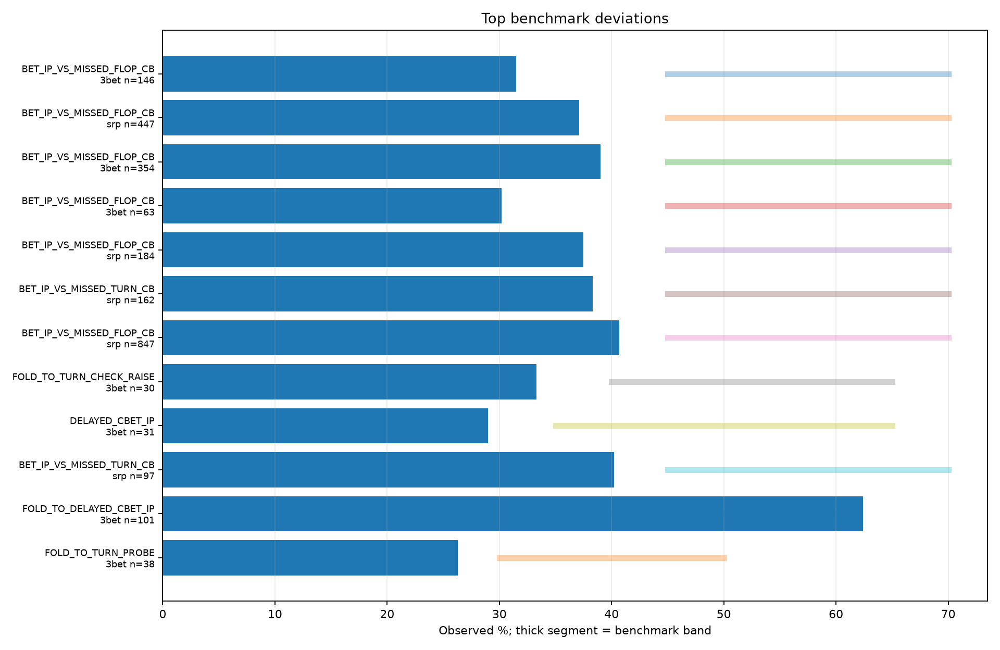
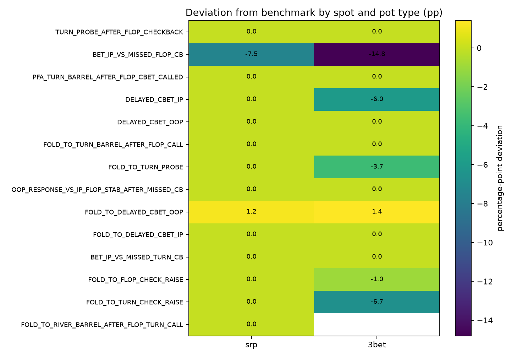
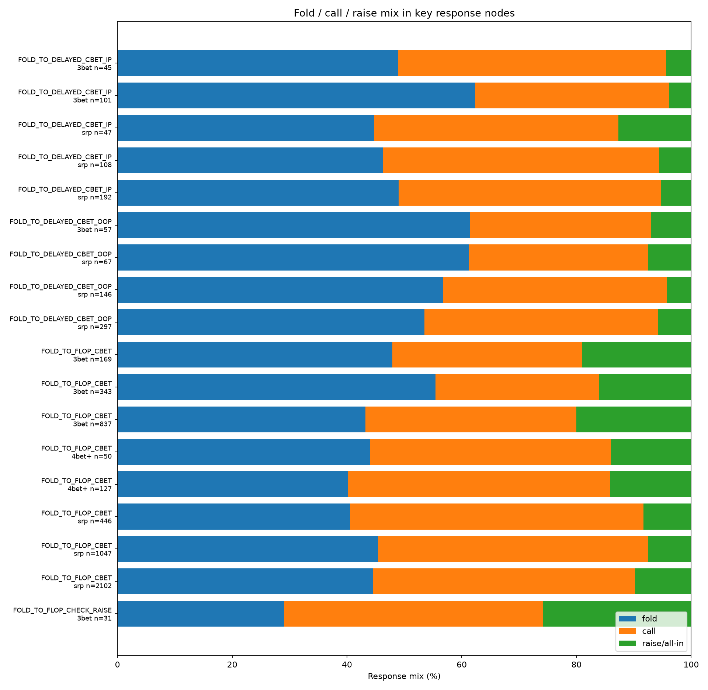
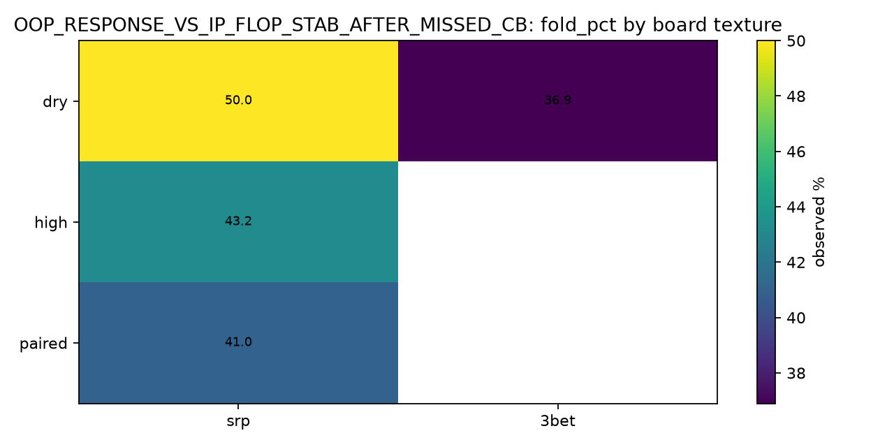

Aggregate review dashboard
CoinPoker PLO Population Analyzer
Privacy-conscious analysis of anonymized hand histories. Frequencies are grouped at population level; no per-player profiles are created.
Hands analyzed
27,701
Decision nodes
19,527
Stake filter
all
Parse errors
0
Hero included
no
Game
PLO4
Priority review candidates
| spot_id | pot_type | opportunities | benchmark_metric | deviation_pp | exploit_score | confidence | benchmark_flag | leak_note |
|---|---|---|---|---|---|---|---|---|
| BET_IP_VS_MISSED_FLOP_CB | srp | 847 | bet_pct | -4.3 | 4.3 | HIGH | LOW | pool under-stabs vs missed flop c-bet; check response stats before pure-bluffing more |
| BET_IP_VS_MISSED_FLOP_CB | srp | 447 | bet_pct | -7.9 | 7.9 | HIGH | LOW | pool under-stabs vs missed flop c-bet; check response stats before pure-bluffing more |
| BET_IP_VS_MISSED_FLOP_CB | 3bet | 354 | bet_pct | -6.0 | 6.0 | HIGH | LOW | pool under-stabs vs missed flop c-bet; check response stats before pure-bluffing more |
| BET_IP_VS_MISSED_FLOP_CB | srp | 184 | bet_pct | -7.5 | 5.25 | MEDIUM | LOW | pool under-stabs vs missed flop c-bet; check response stats before pure-bluffing more |
| BET_IP_VS_MISSED_TURN_CB | srp | 162 | bet_pct | -6.7 | 4.69 | MEDIUM | LOW | pool under-stabs vs missed turn c-bet after calling flop |
| BET_IP_VS_MISSED_FLOP_CB | 3bet | 146 | bet_pct | -13.5 | 9.45 | MEDIUM | LOW | pool under-stabs vs missed flop c-bet; check response stats before pure-bluffing more |
| FOLD_TO_DELAYED_CBET_IP | 3bet | 101 | fold_pct | 2.4 | 1.68 | MEDIUM | HIGH | IP overfolds vs delayed c-bet; OOP delayed c-bets can bluff more |
| BET_IP_VS_MISSED_TURN_CB | srp | 97 | bet_pct | -4.8 | 1.92 | LOW | LOW | pool under-stabs vs missed turn c-bet after calling flop |
| FOLD_TO_FLOP_CHECK_RAISE | 3bet | 90 | fold_pct | -1.1 | 0.44 | LOW | LOW | bettors do not fold enough vs flop check-raise; x/r should be value/equity-heavy |
| FOLD_TO_DELAYED_CBET_OOP | srp | 67 | fold_pct | 1.2 | 0.48 | LOW | HIGH | OOP overfolds vs delayed c-bet; IP delayed c-bets can bluff more |
| BET_IP_VS_MISSED_FLOP_CB | 3bet | 63 | bet_pct | -14.8 | 5.92 | LOW | LOW | pool under-stabs vs missed flop c-bet; check response stats before pure-bluffing more |
| FOLD_TO_DELAYED_CBET_OOP | 3bet | 57 | fold_pct | 1.4 | 0.56 | LOW | HIGH | OOP overfolds vs delayed c-bet; IP delayed c-bets can bluff more |
Pattern overview




All decision nodes
| spot_id | pot_type | opportunities | bet_pct | check_pct | fold_pct | call_pct | raise_pct | avg_size_pct | benchmark_flag | confidence | exploit_score |
|---|---|---|---|---|---|---|---|---|---|---|---|
| BET_IP_VS_MISSED_FLOP_CB | 3bet | 63 | 30.2 | 69.8 | 0.0 | 0.0 | 0.0 | 55.1 | LOW | LOW | 5.92 |
| BET_IP_VS_MISSED_FLOP_CB | 4bet+ | 1 | 0.0 | 100.0 | 0.0 | 0.0 | 0.0 | low_sample | IGNORE | 4.5 | |
| BET_IP_VS_MISSED_FLOP_CB | srp | 184 | 37.5 | 62.5 | 0.0 | 0.0 | 0.0 | 58.7 | LOW | MEDIUM | 5.25 |
| BET_IP_VS_MISSED_FLOP_CB | 3bet | 146 | 31.5 | 68.5 | 0.0 | 0.0 | 0.0 | 68.7 | LOW | MEDIUM | 9.45 |
| BET_IP_VS_MISSED_FLOP_CB | 4bet+ | 10 | 60.0 | 40.0 | 0.0 | 0.0 | 0.0 | 62.6 | low_sample | IGNORE | 0.0 |
| BET_IP_VS_MISSED_FLOP_CB | srp | 447 | 37.1 | 62.9 | 0.0 | 0.0 | 0.0 | 63.5 | LOW | HIGH | 7.9 |
| BET_IP_VS_MISSED_FLOP_CB | 3bet | 354 | 39.0 | 61.0 | 0.0 | 0.0 | 0.0 | 57.8 | LOW | HIGH | 6.0 |
| BET_IP_VS_MISSED_FLOP_CB | 4bet+ | 22 | 45.5 | 54.5 | 0.0 | 0.0 | 0.0 | 72.9 | low_sample | IGNORE | 0.0 |
| BET_IP_VS_MISSED_FLOP_CB | srp | 847 | 40.7 | 59.3 | 0.0 | 0.0 | 0.0 | 62.5 | LOW | HIGH | 4.3 |
| BET_IP_VS_MISSED_TURN_CB | 3bet | 12 | 33.3 | 66.7 | 0.0 | 0.0 | 0.0 | 44.8 | low_sample | IGNORE | 1.17 |
| BET_IP_VS_MISSED_TURN_CB | srp | 33 | 48.5 | 51.5 | 0.0 | 0.0 | 0.0 | 63.7 | OK | LOW | 0.0 |
| BET_IP_VS_MISSED_TURN_CB | 3bet | 17 | 35.3 | 64.7 | 0.0 | 0.0 | 0.0 | 73.1 | low_sample | IGNORE | 0.97 |
| BET_IP_VS_MISSED_TURN_CB | 4bet+ | 3 | 33.3 | 66.7 | 0.0 | 0.0 | 0.0 | 59.5 | low_sample | IGNORE | 1.17 |
| BET_IP_VS_MISSED_TURN_CB | srp | 97 | 40.2 | 59.8 | 0.0 | 0.0 | 0.0 | 62.3 | LOW | LOW | 1.92 |
| BET_IP_VS_MISSED_TURN_CB | 3bet | 74 | 50.0 | 50.0 | 0.0 | 0.0 | 0.0 | 58.3 | OK | LOW | 0.0 |
| BET_IP_VS_MISSED_TURN_CB | 4bet+ | 2 | 50.0 | 50.0 | 0.0 | 0.0 | 0.0 | 100.0 | low_sample | IGNORE | 0.0 |
| BET_IP_VS_MISSED_TURN_CB | srp | 162 | 38.3 | 61.7 | 0.0 | 0.0 | 0.0 | 61.0 | LOW | MEDIUM | 4.69 |
| DELAYED_CBET_IP | 3bet | 31 | 29.0 | 71.0 | 0.0 | 0.0 | 0.0 | 60.4 | LOW | LOW | 2.4 |
| DELAYED_CBET_IP | 4bet+ | 1 | 0.0 | 100.0 | 0.0 | 0.0 | 0.0 | low_sample | IGNORE | 3.5 | |
| DELAYED_CBET_IP | srp | 142 | 45.1 | 54.9 | 0.0 | 0.0 | 0.0 | 59.4 | OK | MEDIUM | 0.0 |
| DELAYED_CBET_IP | 3bet | 60 | 45.0 | 55.0 | 0.0 | 0.0 | 0.0 | 54.8 | OK | LOW | 0.0 |
| DELAYED_CBET_IP | 4bet+ | 2 | 0.0 | 100.0 | 0.0 | 0.0 | 0.0 | low_sample | IGNORE | 3.5 | |
| DELAYED_CBET_IP | srp | 355 | 36.9 | 63.1 | 0.0 | 0.0 | 0.0 | 62.7 | OK | HIGH | 0.0 |
| DELAYED_CBET_IP | 3bet | 121 | 44.6 | 55.4 | 0.0 | 0.0 | 0.0 | 60.5 | OK | MEDIUM | 0.0 |
| DELAYED_CBET_IP | 4bet+ | 7 | 57.1 | 42.9 | 0.0 | 0.0 | 0.0 | 61.7 | low_sample | IGNORE | 0.0 |
| DELAYED_CBET_IP | srp | 632 | 42.2 | 57.8 | 0.0 | 0.0 | 0.0 | 60.7 | OK | HIGH | 0.0 |
| DELAYED_CBET_OOP | 3bet | 39 | 46.2 | 53.8 | 0.0 | 0.0 | 0.0 | 70.4 | OK | LOW | 0.0 |
| DELAYED_CBET_OOP | 4bet+ | 1 | 0.0 | 100.0 | 0.0 | 0.0 | 0.0 | low_sample | IGNORE | 3.5 | |
| DELAYED_CBET_OOP | srp | 112 | 42.0 | 58.0 | 0.0 | 0.0 | 0.0 | 58.9 | OK | MEDIUM | 0.0 |
| DELAYED_CBET_OOP | 3bet | 89 | 44.9 | 55.1 | 0.0 | 0.0 | 0.0 | 55.9 | OK | LOW | 0.0 |
| DELAYED_CBET_OOP | srp | 266 | 36.8 | 62.8 | 0.4 | 0.0 | 0.0 | 64.5 | OK | MEDIUM | 0.0 |
| DELAYED_CBET_OOP | 3bet | 188 | 52.1 | 47.9 | 0.0 | 0.0 | 0.0 | 60.7 | OK | MEDIUM | 0.0 |
| DELAYED_CBET_OOP | 4bet+ | 7 | 57.1 | 42.9 | 0.0 | 0.0 | 0.0 | 58.9 | low_sample | IGNORE | 0.0 |
| DELAYED_CBET_OOP | srp | 501 | 40.9 | 59.1 | 0.0 | 0.0 | 0.0 | 65.2 | OK | HIGH | 0.0 |
| FOLD_TO_DELAYED_CBET_IP | 3bet | 19 | 0.0 | 0.0 | 42.1 | 47.4 | 10.5 | 58.0 | low_sample | IGNORE | 0.0 |
| FOLD_TO_DELAYED_CBET_IP | srp | 47 | 0.0 | 0.0 | 44.7 | 42.6 | 12.8 | 59.6 | OK | LOW | 0.0 |
| FOLD_TO_DELAYED_CBET_IP | 3bet | 45 | 0.0 | 0.0 | 48.9 | 46.7 | 4.4 | 42.0 | OK | LOW | 0.0 |
| FOLD_TO_DELAYED_CBET_IP | 4bet+ | 1 | 0.0 | 0.0 | 100.0 | 0.0 | 0.0 | low_sample | IGNORE | 4.0 | |
| FOLD_TO_DELAYED_CBET_IP | srp | 108 | 0.0 | 0.0 | 46.3 | 48.1 | 5.6 | 50.2 | OK | MEDIUM | 0.0 |
| FOLD_TO_DELAYED_CBET_IP | 3bet | 101 | 0.0 | 0.0 | 62.4 | 33.7 | 4.0 | 41.1 | HIGH | MEDIUM | 1.68 |
| FOLD_TO_DELAYED_CBET_IP | 4bet+ | 7 | 0.0 | 0.0 | 85.7 | 14.3 | 0.0 | 30.4 | low_sample | IGNORE | 2.57 |
| FOLD_TO_DELAYED_CBET_IP | srp | 192 | 0.0 | 0.0 | 49.0 | 45.8 | 5.2 | 50.2 | OK | MEDIUM | 0.0 |
| FOLD_TO_DELAYED_CBET_OOP | 3bet | 13 | 0.0 | 0.0 | 76.9 | 23.1 | 0.0 | 32.6 | low_sample | IGNORE | 1.69 |
| FOLD_TO_DELAYED_CBET_OOP | srp | 67 | 0.0 | 0.0 | 61.2 | 31.3 | 7.5 | 50.1 | HIGH | LOW | 0.48 |
| FOLD_TO_DELAYED_CBET_OOP | 3bet | 26 | 0.0 | 0.0 | 50.0 | 38.5 | 11.5 | 53.5 | low_sample | IGNORE | 0.0 |
| FOLD_TO_DELAYED_CBET_OOP | srp | 146 | 0.0 | 0.0 | 56.8 | 39.0 | 4.1 | 47.1 | OK | MEDIUM | 0.0 |
| FOLD_TO_DELAYED_CBET_OOP | 3bet | 57 | 0.0 | 0.0 | 61.4 | 31.6 | 7.0 | 52.7 | HIGH | LOW | 0.56 |
| FOLD_TO_DELAYED_CBET_OOP | 4bet+ | 4 | 0.0 | 0.0 | 50.0 | 25.0 | 25.0 | 51.1 | low_sample | IGNORE | 0.0 |
| FOLD_TO_DELAYED_CBET_OOP | srp | 297 | 0.0 | 0.0 | 53.5 | 40.7 | 5.7 | 49.2 | OK | MEDIUM | 0.0 |
| FOLD_TO_FLOP_CBET | 3bet | 169 | 0.0 | 0.0 | 47.9 | 33.1 | 18.9 | 73.9 | audit_required | MEDIUM | 0.0 |
| FOLD_TO_FLOP_CBET | 4bet+ | 27 | 0.0 | 0.0 | 51.9 | 37.0 | 11.1 | 45.5 | audit_required | IGNORE | 0.0 |
| FOLD_TO_FLOP_CBET | srp | 446 | 0.0 | 0.0 | 40.6 | 51.1 | 8.3 | 50.2 | audit_required | HIGH | 0.0 |
| FOLD_TO_FLOP_CBET | 3bet | 343 | 0.0 | 0.0 | 55.4 | 28.6 | 16.0 | 72.3 | audit_required | HIGH | 0.0 |
| FOLD_TO_FLOP_CBET | 4bet+ | 50 | 0.0 | 0.0 | 44.0 | 42.0 | 14.0 | 47.0 | audit_required | LOW | 0.0 |
| FOLD_TO_FLOP_CBET | srp | 1047 | 0.0 | 0.0 | 45.4 | 47.1 | 7.5 | 51.9 | audit_required | HIGH | 0.0 |
| FOLD_TO_FLOP_CBET | 3bet | 837 | 0.0 | 0.0 | 43.2 | 36.8 | 20.0 | 67.3 | audit_required | HIGH | 0.0 |
| FOLD_TO_FLOP_CBET | 4bet+ | 127 | 0.0 | 0.0 | 40.2 | 45.7 | 14.2 | 50.5 | audit_required | MEDIUM | 0.0 |
| FOLD_TO_FLOP_CBET | srp | 2102 | 0.0 | 0.0 | 44.6 | 45.6 | 9.8 | 53.9 | audit_required | HIGH | 0.0 |
| FOLD_TO_FLOP_CHECK_RAISE | 3bet | 14 | 0.0 | 0.0 | 14.3 | 57.1 | 28.6 | 41.8 | low_sample | IGNORE | 1.57 |
| FOLD_TO_FLOP_CHECK_RAISE | 4bet+ | 3 | 0.0 | 0.0 | 0.0 | 100.0 | 0.0 | 4.3 | low_sample | IGNORE | 3.0 |
| FOLD_TO_FLOP_CHECK_RAISE | srp | 33 | 0.0 | 0.0 | 39.4 | 54.5 | 6.1 | 54.3 | OK | LOW | 0.0 |
| FOLD_TO_FLOP_CHECK_RAISE | 3bet | 31 | 0.0 | 0.0 | 29.0 | 45.2 | 25.8 | 52.2 | LOW | LOW | 0.4 |
| FOLD_TO_FLOP_CHECK_RAISE | 4bet+ | 5 | 0.0 | 0.0 | 20.0 | 60.0 | 20.0 | 21.3 | low_sample | IGNORE | 1.0 |
| FOLD_TO_FLOP_CHECK_RAISE | limped | 2 | 0.0 | 0.0 | 50.0 | 50.0 | 0.0 | 20.0 | low_sample | IGNORE | 0.0 |
| FOLD_TO_FLOP_CHECK_RAISE | srp | 59 | 0.0 | 0.0 | 44.1 | 37.3 | 18.6 | 83.1 | OK | LOW | 0.0 |
| FOLD_TO_FLOP_CHECK_RAISE | 3bet | 90 | 0.0 | 0.0 | 28.9 | 41.1 | 30.0 | 59.1 | LOW | LOW | 0.44 |
| FOLD_TO_FLOP_CHECK_RAISE | 4bet+ | 5 | 0.0 | 0.0 | 20.0 | 80.0 | 0.0 | 4.9 | low_sample | IGNORE | 1.0 |
| FOLD_TO_FLOP_CHECK_RAISE | limped | 4 | 0.0 | 0.0 | 25.0 | 75.0 | 0.0 | 47.1 | low_sample | IGNORE | 0.5 |
| FOLD_TO_FLOP_CHECK_RAISE | srp | 148 | 0.0 | 0.0 | 44.6 | 43.9 | 11.5 | 62.9 | OK | MEDIUM | 0.0 |
| FOLD_TO_RIVER_BARREL_AFTER_FLOP_TURN_CALL | 3bet | 1 | 0.0 | 0.0 | 100.0 | 0.0 | 0.0 | low_sample | IGNORE | 3.5 | |
| FOLD_TO_RIVER_BARREL_AFTER_FLOP_TURN_CALL | srp | 25 | 0.0 | 0.0 | 48.0 | 44.0 | 8.0 | 55.4 | low_sample | IGNORE | 0.0 |
| FOLD_TO_RIVER_BARREL_AFTER_FLOP_TURN_CALL | 3bet | 13 | 0.0 | 0.0 | 53.8 | 38.5 | 7.7 | 49.5 | low_sample | IGNORE | 0.0 |
| FOLD_TO_RIVER_BARREL_AFTER_FLOP_TURN_CALL | 4bet+ | 1 | 0.0 | 0.0 | 100.0 | 0.0 | 0.0 | low_sample | IGNORE | 3.5 | |
| FOLD_TO_RIVER_BARREL_AFTER_FLOP_TURN_CALL | srp | 42 | 0.0 | 0.0 | 54.8 | 42.9 | 2.4 | 42.0 | OK | LOW | 0.0 |
| FOLD_TO_RIVER_BARREL_AFTER_FLOP_TURN_CALL | 3bet | 21 | 0.0 | 0.0 | 47.6 | 52.4 | 0.0 | 27.1 | low_sample | IGNORE | 0.0 |
| FOLD_TO_RIVER_BARREL_AFTER_FLOP_TURN_CALL | srp | 92 | 0.0 | 0.0 | 46.7 | 46.7 | 6.5 | 45.1 | OK | LOW | 0.0 |
| FOLD_TO_TURN_BARREL_AFTER_FLOP_CALL | 3bet | 29 | 0.0 | 0.0 | 44.8 | 24.1 | 31.0 | 79.0 | low_sample | IGNORE | 0.0 |
| FOLD_TO_TURN_BARREL_AFTER_FLOP_CALL | 4bet+ | 1 | 0.0 | 0.0 | 100.0 | 0.0 | 0.0 | low_sample | IGNORE | 4.5 | |
| FOLD_TO_TURN_BARREL_AFTER_FLOP_CALL | srp | 102 | 0.0 | 0.0 | 43.1 | 47.1 | 9.8 | 58.2 | OK | MEDIUM | 0.0 |
| FOLD_TO_TURN_BARREL_AFTER_FLOP_CALL | 3bet | 59 | 0.0 | 0.0 | 37.3 | 42.4 | 20.3 | 52.2 | OK | LOW | 0.0 |
| FOLD_TO_TURN_BARREL_AFTER_FLOP_CALL | 4bet+ | 2 | 0.0 | 0.0 | 50.0 | 50.0 | 0.0 | 11.3 | low_sample | IGNORE | 0.0 |
| FOLD_TO_TURN_BARREL_AFTER_FLOP_CALL | srp | 233 | 0.0 | 0.0 | 45.1 | 44.6 | 10.3 | 59.8 | OK | MEDIUM | 0.0 |
| FOLD_TO_TURN_BARREL_AFTER_FLOP_CALL | 3bet | 164 | 0.0 | 0.0 | 50.0 | 34.1 | 15.9 | 54.7 | OK | MEDIUM | 0.0 |
| FOLD_TO_TURN_BARREL_AFTER_FLOP_CALL | 4bet+ | 13 | 0.0 | 0.0 | 61.5 | 38.5 | 0.0 | 28.8 | low_sample | IGNORE | 0.65 |
| FOLD_TO_TURN_BARREL_AFTER_FLOP_CALL | srp | 443 | 0.0 | 0.0 | 41.3 | 49.0 | 9.7 | 56.5 | OK | HIGH | 0.0 |
| FOLD_TO_TURN_CHECK_RAISE | 3bet | 3 | 0.0 | 0.0 | 0.0 | 100.0 | 0.0 | 37.1 | low_sample | IGNORE | 4.0 |
| FOLD_TO_TURN_CHECK_RAISE | limped | 1 | 0.0 | 0.0 | 100.0 | 0.0 | 0.0 | low_sample | IGNORE | 3.5 | |
| FOLD_TO_TURN_CHECK_RAISE | srp | 21 | 0.0 | 0.0 | 38.1 | 47.6 | 14.3 | 53.0 | low_sample | IGNORE | 0.19 |
| FOLD_TO_TURN_CHECK_RAISE | 3bet | 14 | 0.0 | 0.0 | 42.9 | 57.1 | 0.0 | 24.4 | low_sample | IGNORE | 0.0 |
| FOLD_TO_TURN_CHECK_RAISE | limped | 6 | 0.0 | 0.0 | 33.3 | 66.7 | 0.0 | 40.6 | low_sample | IGNORE | 0.67 |
| FOLD_TO_TURN_CHECK_RAISE | srp | 35 | 0.0 | 0.0 | 45.7 | 42.9 | 11.4 | 41.3 | OK | LOW | 0.0 |
| FOLD_TO_TURN_CHECK_RAISE | 3bet | 30 | 0.0 | 0.0 | 33.3 | 60.0 | 6.7 | 32.9 | LOW | LOW | 2.68 |
| FOLD_TO_TURN_CHECK_RAISE | 4bet+ | 1 | 0.0 | 0.0 | 0.0 | 100.0 | 0.0 | 7.8 | low_sample | IGNORE | 4.0 |
| FOLD_TO_TURN_CHECK_RAISE | limped | 2 | 0.0 | 0.0 | 0.0 | 100.0 | 0.0 | 33.3 | low_sample | IGNORE | 4.0 |
| FOLD_TO_TURN_CHECK_RAISE | srp | 82 | 0.0 | 0.0 | 43.9 | 43.9 | 12.2 | 45.4 | OK | LOW | 0.0 |
| FOLD_TO_TURN_PROBE | 3bet | 17 | 0.0 | 0.0 | 41.2 | 47.1 | 11.8 | 62.8 | low_sample | IGNORE | 0.0 |
| FOLD_TO_TURN_PROBE | 4bet+ | 2 | 0.0 | 0.0 | 100.0 | 0.0 | 0.0 | low_sample | IGNORE | 5.0 | |
| FOLD_TO_TURN_PROBE | srp | 88 | 0.0 | 0.0 | 48.9 | 45.5 | 5.7 | 47.2 | OK | LOW | 0.0 |
| FOLD_TO_TURN_PROBE | 3bet | 38 | 0.0 | 0.0 | 26.3 | 71.1 | 2.6 | 38.0 | LOW | LOW | 1.48 |
| FOLD_TO_TURN_PROBE | 4bet+ | 1 | 0.0 | 0.0 | 0.0 | 100.0 | 0.0 | 24.8 | low_sample | IGNORE | 3.0 |
| FOLD_TO_TURN_PROBE | srp | 183 | 0.0 | 0.0 | 47.0 | 47.5 | 5.5 | 48.8 | OK | MEDIUM | 0.0 |
| FOLD_TO_TURN_PROBE | 3bet | 74 | 0.0 | 0.0 | 47.3 | 52.7 | 0.0 | 36.7 | OK | LOW | 0.0 |
| FOLD_TO_TURN_PROBE | 4bet+ | 3 | 0.0 | 0.0 | 66.7 | 33.3 | 0.0 | 49.2 | low_sample | IGNORE | 1.67 |
| FOLD_TO_TURN_PROBE | srp | 432 | 0.0 | 0.0 | 45.6 | 48.1 | 6.2 | 50.8 | OK | HIGH | 0.0 |
| OOP_RESPONSE_VS_IP_FLOP_STAB_AFTER_MISSED_CB | 3bet | 16 | 0.0 | 0.0 | 56.2 | 37.5 | 6.2 | 52.5 | low_sample | IGNORE | 0.62 |
| OOP_RESPONSE_VS_IP_FLOP_STAB_AFTER_MISSED_CB | srp | 78 | 0.0 | 0.0 | 48.7 | 44.9 | 6.4 | 50.1 | OK | LOW | 0.0 |
| OOP_RESPONSE_VS_IP_FLOP_STAB_AFTER_MISSED_CB | 3bet | 48 | 0.0 | 0.0 | 45.8 | 41.7 | 12.5 | 65.7 | OK | LOW | 0.0 |
| OOP_RESPONSE_VS_IP_FLOP_STAB_AFTER_MISSED_CB | 4bet+ | 3 | 0.0 | 0.0 | 66.7 | 0.0 | 33.3 | 96.3 | low_sample | IGNORE | 1.67 |
| OOP_RESPONSE_VS_IP_FLOP_STAB_AFTER_MISSED_CB | srp | 168 | 0.0 | 0.0 | 48.8 | 47.6 | 3.6 | 45.9 | OK | MEDIUM | 0.0 |
| OOP_RESPONSE_VS_IP_FLOP_STAB_AFTER_MISSED_CB | 3bet | 113 | 0.0 | 0.0 | 37.2 | 39.8 | 23.0 | 76.4 | OK | MEDIUM | 0.0 |
| OOP_RESPONSE_VS_IP_FLOP_STAB_AFTER_MISSED_CB | 4bet+ | 5 | 0.0 | 0.0 | 60.0 | 40.0 | 0.0 | 50.0 | low_sample | IGNORE | 1.0 |
| OOP_RESPONSE_VS_IP_FLOP_STAB_AFTER_MISSED_CB | srp | 370 | 0.0 | 0.0 | 48.9 | 45.9 | 5.1 | 47.2 | OK | HIGH | 0.0 |
| OOP_RESPONSE_VS_IP_TURN_STAB_AFTER_MISSED_CB | 3bet | 5 | 0.0 | 0.0 | 20.0 | 60.0 | 20.0 | 53.3 | low_sample | IGNORE | 1.5 |
| OOP_RESPONSE_VS_IP_TURN_STAB_AFTER_MISSED_CB | srp | 16 | 0.0 | 0.0 | 50.0 | 43.8 | 6.2 | 53.5 | low_sample | IGNORE | 0.0 |
| OOP_RESPONSE_VS_IP_TURN_STAB_AFTER_MISSED_CB | 3bet | 9 | 0.0 | 0.0 | 66.7 | 33.3 | 0.0 | 30.5 | low_sample | IGNORE | 0.67 |
| OOP_RESPONSE_VS_IP_TURN_STAB_AFTER_MISSED_CB | 4bet+ | 1 | 0.0 | 0.0 | 100.0 | 0.0 | 0.0 | low_sample | IGNORE | 4.0 | |
| OOP_RESPONSE_VS_IP_TURN_STAB_AFTER_MISSED_CB | srp | 34 | 0.0 | 0.0 | 58.8 | 38.2 | 2.9 | 50.8 | OK | LOW | 0.0 |
| OOP_RESPONSE_VS_IP_TURN_STAB_AFTER_MISSED_CB | 3bet | 36 | 0.0 | 0.0 | 44.4 | 36.1 | 19.4 | 56.3 | OK | LOW | 0.0 |
| OOP_RESPONSE_VS_IP_TURN_STAB_AFTER_MISSED_CB | 4bet+ | 1 | 0.0 | 0.0 | 0.0 | 100.0 | 0.0 | 22.3 | low_sample | IGNORE | 3.5 |
| OOP_RESPONSE_VS_IP_TURN_STAB_AFTER_MISSED_CB | srp | 62 | 0.0 | 0.0 | 41.9 | 53.2 | 4.8 | 45.4 | OK | LOW | 0.0 |
| PFA_RESPONSE_AFTER_TURN_GIVEUP | 3bet | 5 | 0.0 | 0.0 | 20.0 | 60.0 | 20.0 | 53.3 | low_sample | IGNORE | 1.0 |
| PFA_RESPONSE_AFTER_TURN_GIVEUP | srp | 16 | 0.0 | 0.0 | 50.0 | 43.8 | 6.2 | 53.5 | low_sample | IGNORE | 0.0 |
| PFA_RESPONSE_AFTER_TURN_GIVEUP | 3bet | 9 | 0.0 | 0.0 | 66.7 | 33.3 | 0.0 | 30.5 | low_sample | IGNORE | 0.67 |
| PFA_RESPONSE_AFTER_TURN_GIVEUP | 4bet+ | 1 | 0.0 | 0.0 | 100.0 | 0.0 | 0.0 | low_sample | IGNORE | 4.0 | |
| PFA_RESPONSE_AFTER_TURN_GIVEUP | srp | 34 | 0.0 | 0.0 | 58.8 | 38.2 | 2.9 | 50.8 | OK | LOW | 0.0 |
| PFA_RESPONSE_AFTER_TURN_GIVEUP | 3bet | 36 | 0.0 | 0.0 | 44.4 | 36.1 | 19.4 | 56.3 | OK | LOW | 0.0 |
| PFA_RESPONSE_AFTER_TURN_GIVEUP | 4bet+ | 1 | 0.0 | 0.0 | 0.0 | 100.0 | 0.0 | 22.3 | low_sample | IGNORE | 3.0 |
| PFA_RESPONSE_AFTER_TURN_GIVEUP | srp | 62 | 0.0 | 0.0 | 41.9 | 53.2 | 4.8 | 45.4 | OK | LOW | 0.0 |
| PFA_TURN_BARREL_AFTER_FLOP_CBET_CALLED | 3bet | 53 | 58.5 | 41.5 | 0.0 | 0.0 | 0.0 | 76.8 | OK | LOW | 0.0 |
| PFA_TURN_BARREL_AFTER_FLOP_CBET_CALLED | 4bet+ | 2 | 100.0 | 0.0 | 0.0 | 0.0 | 0.0 | 56.3 | low_sample | IGNORE | 3.0 |
| PFA_TURN_BARREL_AFTER_FLOP_CBET_CALLED | srp | 201 | 45.8 | 54.2 | 0.0 | 0.0 | 0.0 | 76.7 | OK | MEDIUM | 0.0 |
| PFA_TURN_BARREL_AFTER_FLOP_CBET_CALLED | 3bet | 84 | 61.9 | 38.1 | 0.0 | 0.0 | 0.0 | 68.8 | OK | LOW | 0.0 |
| PFA_TURN_BARREL_AFTER_FLOP_CBET_CALLED | 4bet+ | 4 | 25.0 | 75.0 | 0.0 | 0.0 | 0.0 | 31.5 | low_sample | IGNORE | 1.5 |
| PFA_TURN_BARREL_AFTER_FLOP_CBET_CALLED | srp | 425 | 51.3 | 48.7 | 0.0 | 0.0 | 0.0 | 72.9 | OK | HIGH | 0.0 |
| PFA_TURN_BARREL_AFTER_FLOP_CBET_CALLED | 3bet | 280 | 58.9 | 41.1 | 0.0 | 0.0 | 0.0 | 71.9 | OK | MEDIUM | 0.0 |
| PFA_TURN_BARREL_AFTER_FLOP_CBET_CALLED | 4bet+ | 16 | 87.5 | 12.5 | 0.0 | 0.0 | 0.0 | 55.4 | low_sample | IGNORE | 1.75 |
| PFA_TURN_BARREL_AFTER_FLOP_CBET_CALLED | srp | 840 | 47.6 | 52.4 | 0.0 | 0.0 | 0.0 | 72.5 | OK | HIGH | 0.0 |
| TURN_PROBE_AFTER_FLOP_CHECKBACK | 3bet | 60 | 38.3 | 61.7 | 0.0 | 0.0 | 0.0 | 67.1 | OK | LOW | 0.0 |
| TURN_PROBE_AFTER_FLOP_CHECKBACK | 4bet+ | 2 | 50.0 | 50.0 | 0.0 | 0.0 | 0.0 | 50.0 | low_sample | IGNORE | 0.0 |
| TURN_PROBE_AFTER_FLOP_CHECKBACK | srp | 258 | 38.8 | 60.9 | 0.4 | 0.0 | 0.0 | 62.0 | OK | MEDIUM | 0.0 |
| TURN_PROBE_AFTER_FLOP_CHECKBACK | 3bet | 107 | 39.3 | 60.7 | 0.0 | 0.0 | 0.0 | 55.4 | OK | MEDIUM | 0.0 |
| TURN_PROBE_AFTER_FLOP_CHECKBACK | 4bet+ | 5 | 40.0 | 60.0 | 0.0 | 0.0 | 0.0 | 66.5 | low_sample | IGNORE | 0.0 |
| TURN_PROBE_AFTER_FLOP_CHECKBACK | srp | 607 | 37.6 | 62.4 | 0.0 | 0.0 | 0.0 | 64.4 | OK | HIGH | 0.0 |
| TURN_PROBE_AFTER_FLOP_CHECKBACK | 3bet | 230 | 37.0 | 63.0 | 0.0 | 0.0 | 0.0 | 65.1 | OK | MEDIUM | 0.0 |
| TURN_PROBE_AFTER_FLOP_CHECKBACK | 4bet+ | 19 | 42.1 | 57.9 | 0.0 | 0.0 | 0.0 | 68.5 | low_sample | IGNORE | 0.0 |
| TURN_PROBE_AFTER_FLOP_CHECKBACK | srp | 1231 | 41.3 | 58.7 | 0.1 | 0.0 | 0.0 | 67.3 | OK | HIGH | 0.0 |
How to read this report
Review bands, not ground truth.
LOW and HIGH mark observations outside configurable practical bands. audit_required suppresses interpretation when a definition remains unresolved. These labels are not solver outputs or automatic strategy changes.
Traceable by design.
The local report folder also contains exact filters, benchmark definitions, aggregate splits and pool_spots.csv for source-hand review. Never publish granular files from real data without a privacy review.